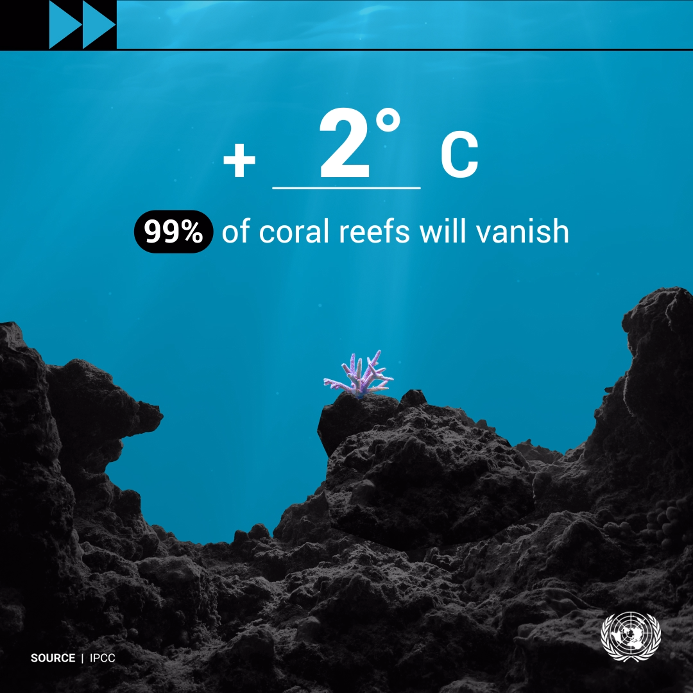
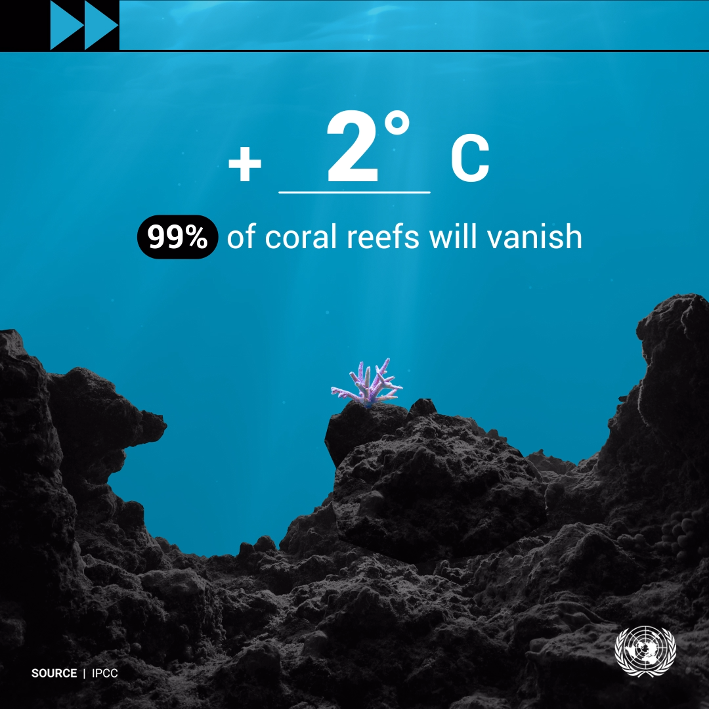

Rising sea temperatures and ocean acidification are causing widespread damage to coral reefs and mangroves,
which are essential for supporting ocean life. Coral reefs, in particular, are highly vulnerable,
with a 1.1°C increase in global temperatures already leading to significant bleaching events.
If temperatures rise by 1.5°C, it is projected that 70-90% of coral reefs will be lost, and at a 2°C increase,
nearly all coral reefs could disappear. Mangroves, which protect coastlines from erosion and provide habitats for numerous species,
are also under threat from rising sea levels and increased salinity.
This loss not only affects marine life but also human communities that rely on mangroves for protection and livelihood.
Additionally, many marine species are migrating to cooler waters as their traditional habitats become uninhabitable,
disrupting existing ecosystems and increasing competition for resources. The UN estimates that over half of the world’s marine species could face extinction by 2100 if current trends continue,
highlighting the urgent need for global action to mitigate climate change and protect marine biodiversity.
The first image shows bleached coral reefs, illustrating the devastating effect of rising sea temperatures.
The second image depicts a coastal area with eroded mangroves,
highlighting the loss of crucial habitats.
The third picture features a variety of marine species, emphasizing the biodiversity at risk due to climate change.
Reference: The UN
The ocean is undergoing significant changes due to increasing greenhouse gases from human activities.
Around 90% of the excess heat from global warming is absorbed by the ocean, leading to rising ocean temperatures and more frequent marine heat waves.
This warming contributes to higher sea levels, as warmer water expands and melting ice sheets add freshwater to the ocean3. The Surface Water and Ocean Topography (SWOT) mission and Sentinel-6 Michael Freilich are providing detailed data on these changes.
Additionally, the tropical ocean has turned greener over the past 20 years, reflecting changes in phytoplankton populations, which are crucial to the ocean’s food web.
Warmer ocean temperatures also lead to more intense hurricanes and increased ocean acidity, which harms marine life like corals. NASA’s various satellite missions are crucial in monitoring these changes and understanding their impacts on the global climate.
Reference: science.nasa.gov
Among experts working in the field of climatology,
there is almost unanimity:
the increased greenhouse gas emissions have most likely contributed to the observed rise in the sea surface temperature and the heating of not only the atmosphere but is expected to be absorbed by the ocean by this very percentage.
And those very record breaking values of heat there are within the oceans, mostly the topmost ocean layer, the percentage of them occurring in 2088 is very high.
Addition of more heat, which does bring the excess heat wave temperature in marine water hotter even and more often, also has the risk of organizing harm to marine reserve phylum, fish and fisheries.
Of these some kind of threats, in brief, concern every part of the world to some extent especially over extended periods as found in the global oceanic area’s climate behavior managing to saturate the world’s atmosphere with marine water more than 15cm higher than what has been the status quo for the previous three decades.
Just as important is the decline in mnemonics related to marine biology in geography, it means the loss of the entire discipline of oceanography because the marine geography of Philippines is even more rich in terms of humidity, water and other surroundings. Whether within or outside of natural divisions of societies,
the interaction between the two also turns the climate upside down so that more fierce storms, changes in wind and precipitation occur, as well as other effects that stall ocean currents, which disturb the harmony of the ocean community and its economic activities.
Additional factors are the temperature of the sea and the characteristics of such water, which have been altered over the years as variations in fish stock have not occurred hence positively influencing the migration of fish. In addition, the reduction in the number of corals within an area causes the shore to become subject to waves and thus forcing populations living on the coastline exposed to storm surges and floods even though the waves are more likely to contain sediments.
Reference: science.nasa.gov